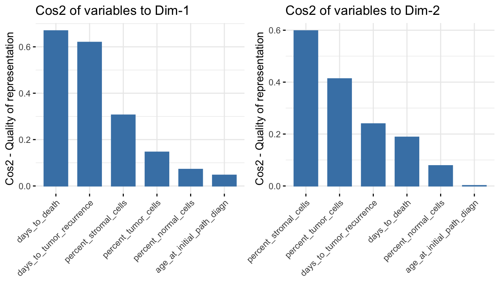
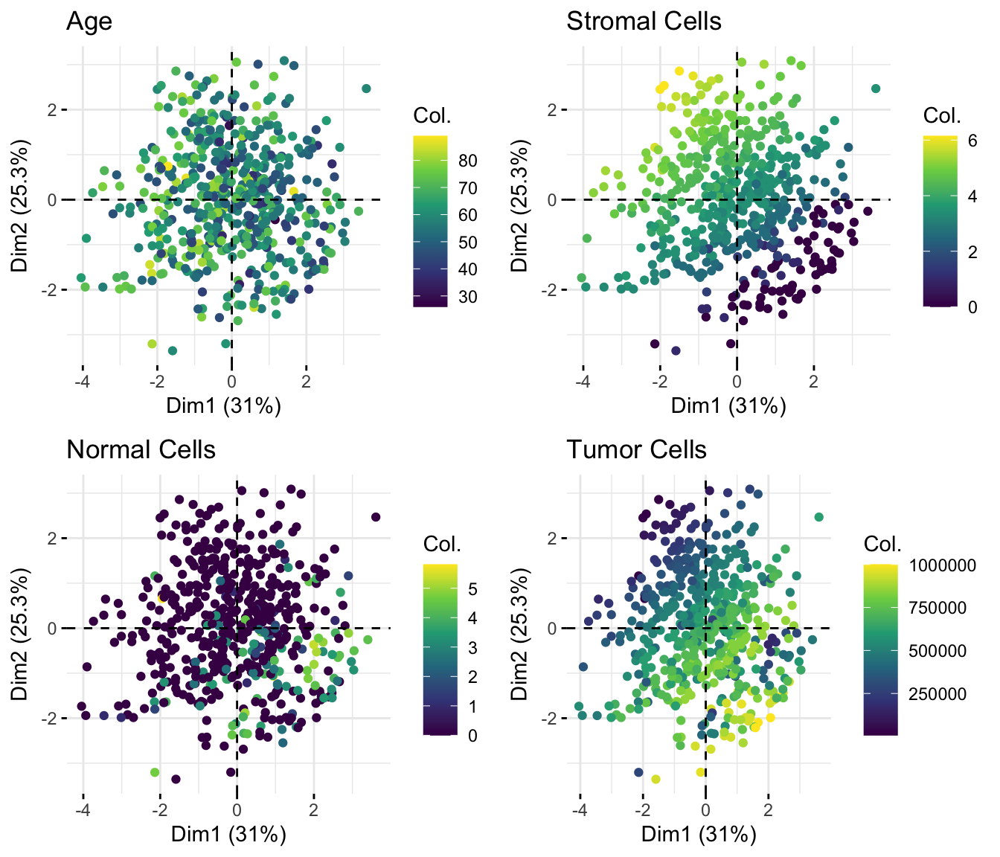
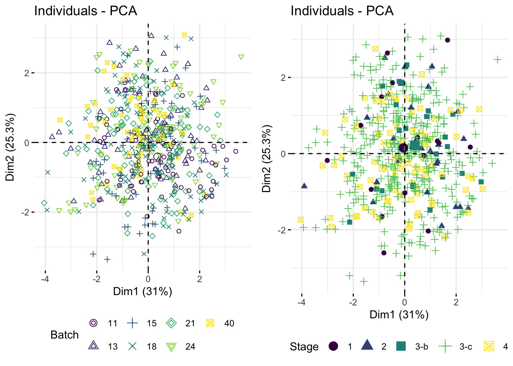
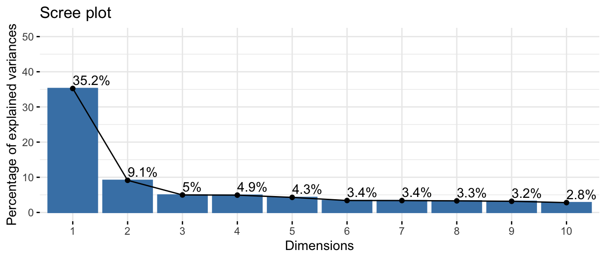
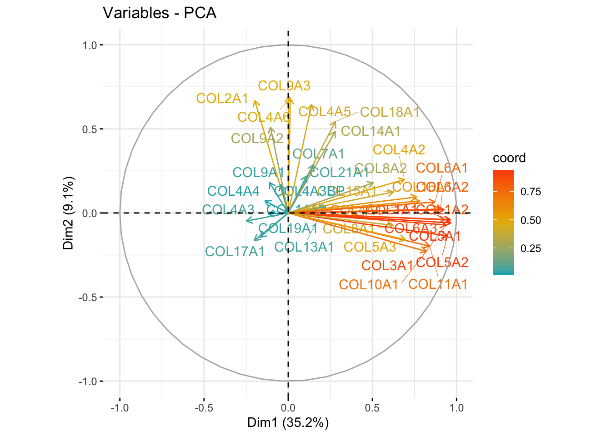
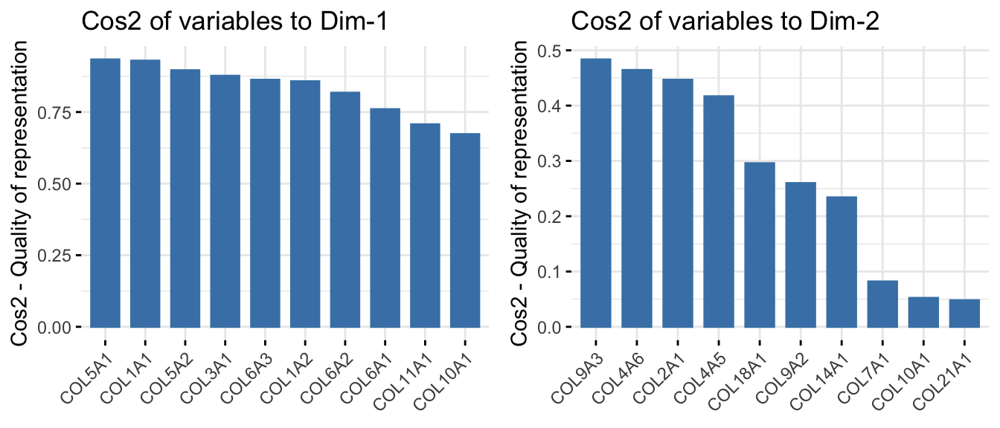
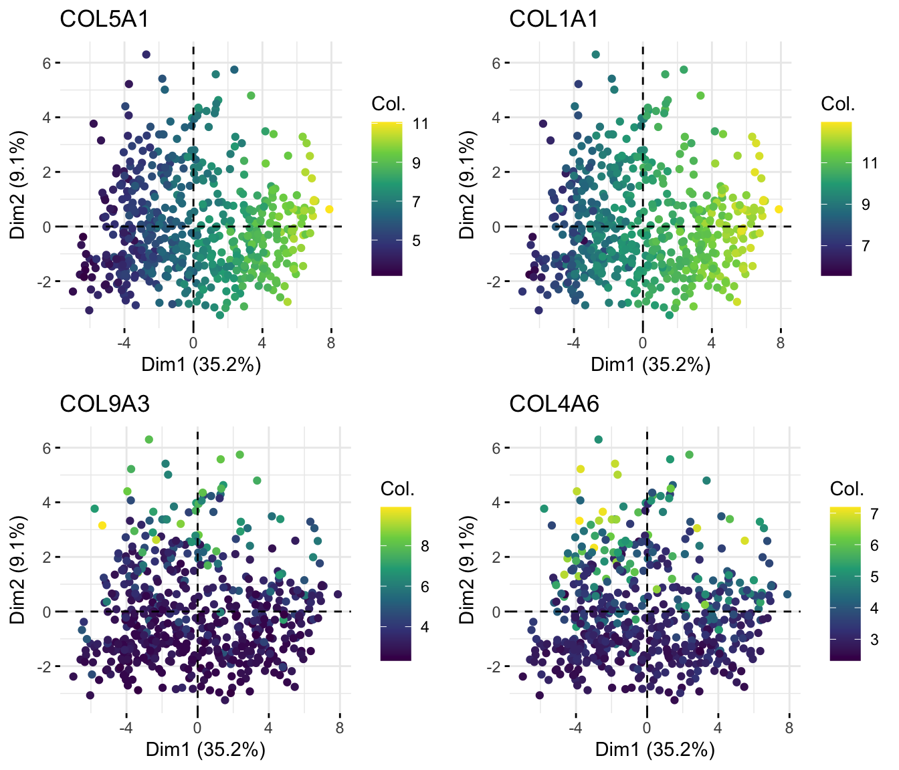
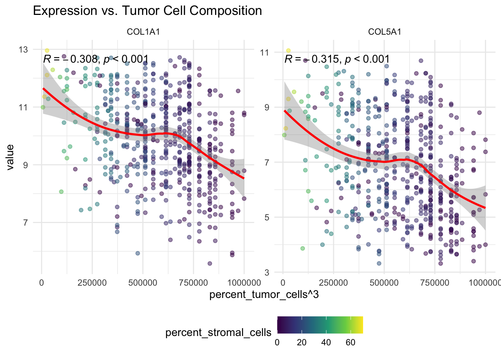

# if (!require("BiocManager", quietly = TRUE))
# install.packages("BiocManager")
# BiocManager::install("DESeq2")
library(DESeq2)
#library(readxl)
library(tidyverse)
library(FactoMineR)
library(factoextra)
#library(corrplot)
library(ggpubr)Presentation 3 - Exploratory Data Analysis (EDA)
Exploratory Data Analysis: Multivariate Analysis
Multivariate visualization can help us uncover trends, clusters, and interactions.
We’re now moving beyond summary statistics and simple two-variable plots to explore more complex relationships in our data.
- Our focus is to assess whether the collagen (COL) gene family plays a role in ovarian cancer, and whether cell type proportions (tumor, stromal, or normal) influence collagen expression. We also want to examine whether patient characteristics, such as tumor stage, correlate with gene expression patterns.
Load packages
Load data
load("../data/Ovarian_comb_prep_temp.RData")However, as the number of variables grows—dozens of genes, clinical features, and categorical groups—traditional visualizations become overwhelming and hard to interpret.
It’s time to move toward dimensionality reduction techniques like PCA or clustering to uncover deeper structure and highlight the most informative patterns.
Normality and Data Transformation
Real-world data is often messy: skewed, non-linear, or heteroscedastic (i.e., variance changes with the mean). Data transformation prepares our dataset for accurate analysis and modeling. Depending on our data’s characteristics and goals, we may need to scale or transform variables to:
Address non-linearity
Reduce skewness
Stabilize variance
Meet model assumptions (e.g., normality, homoscedasticity)
Common Data Transformation Techniques
| Technique | Description | Use case |
|---|---|---|
| Z-score scaling | Rescales variables to mean 0 and SD 1 | Good for PCA, regression |
| Min-Max scaling | Rescales variables to 0–1 range | Needed for neural nets, clustering |
| Log transformation | Compresses large values, reduces right skew | Count data, income, RNA-seq |
| Square-root transformation | Similar to log but gentler | Right-skewed count data, Poisson-like |
| Square/power transformations | Expands right tail, reduces left skew | Left-skewed variables |
=======
Checking for Normality
Before applying any transformation, it’s essential to visually assess if our variables are approximately normally distributed. Many statistical models (e.g., linear regression, t-tests, PCA) assume normality.
We can do this using QQ plots and histograms. Lets try to look at our clinical data.
Example: QQ Plot for Gene Expression
# Pivot integer columns into long format
df_long <- df_comb %>%
pivot_longer(where(is.integer),
names_to = "variable",
values_to = "value")
# QQ plot
ggplot(df_long, aes(sample = value)) +
geom_qq_line(color = "blue") +
geom_qq(color = "red", alpha = 0.7) +
labs(title = "QQ Plot for Gene Expression",
x = "Theoretical Quantiles", y = "Sample Quantiles") +
theme_minimal() +
facet_wrap(vars(variable), nrow = 2, scales = "free")Histogram of Raw Values
# Histogram
ggplot(df_long, aes(x = value)) +
geom_histogram(bins = 30, fill = "#482878FF", color = "black") +
theme_minimal() +
facet_wrap(vars(variable), nrow = 2, scales = "free") +
labs(title = "Distribution of Gene Expression")Warning: Removed 65 rows containing non-finite outside the scale range
(`stat_bin()`).
If the histogram is heavily skewed, or the QQ plot deviates from the diagonal, a transformation may be needed to improve model accuracy and interpretability.
Transformations to Improve Normality and Reduce Skewness
In many datasets, especially in biological or economic data, variables are skewed rather than normally distributed.
When predictors are highly skewed:
The model may become overly sensitive to extreme outliers
Influential points can distort regression lines or PCA components
Common Transformations by Skew Direction
If right-skewed, try:
Square-root transformation (e.g.,
sqrt(x)) - Gentler than log, good for counts or mild skew. Makes extreme values less extreme.Log transformation (e.g.,
log(x + 1)) - Common in expression data.
If left-skewed, try:
- Squaring or cubing
x^2,x^3,exp(x)- For strong left-skewed data, Expands large values, stretches upper tail. Common in gene expression, financial and count data.
- Squaring or cubing
Example: Applying Log and Power Transforms
df_pca <- df_comb %>%
select(where(is.integer) | where(is.factor)) %>%
drop_na(where(is.integer))
df_raw <- df_pca %>%
select(where(is.integer))
group_var <- df_pca %>%
select(where(is.factor))
df_scaled <- df_raw %>%
select(where(is.integer)) %>%
mutate(
percent_stromal_cells = log2(percent_stromal_cells + 1),
#percent_not_cancer_cells = log2(percent_not_cancer_cells + 1),
percent_normal_cells = log2(percent_normal_cells + 1),
percent_tumor_cells = percent_tumor_cells^2) Histogram After Transformation
df_long <- df_scaled %>%
pivot_longer(cols = everything(), names_to = "gene", values_to = "value")
ggplot(df_long, aes(x = value)) +
geom_histogram(bins = 30, fill = "#482878FF", color = "black") +
theme_minimal() +
facet_wrap(vars(gene), nrow = 2, scales = "free") +
labs(title = "Transformed Variables")Summary
Always check for normality before choosing a transformation.
Right-skewed data can benefit from log or sqrt transformations.
Left-skewed data may benefit from squaring.
QQ plots, histograms, and PCA are excellent tools to assess transformation effectiveness.
Applying Z-Score Scaling
Z-score standardization is essential when:
- Variables have different units or ranges
- If you plan to apply PCA, clustering, or distance-based models
df_long <- df_raw %>%
pivot_longer(everything(), names_to = "Sample", values_to = "Value")
p1 <- ggplot(df_long, aes(x = Sample, y = Value, fill = Sample)) +
geom_boxplot() +
theme_minimal() +
labs(title = "Boxplot: raw") +
theme(legend.position="none",
axis.text.x = element_text(angle = 90, vjust = 0.5)) +
scale_fill_viridis_d()
df_scaled_st <- as.tibble(scale(df_raw))Warning: `as.tibble()` was deprecated in tibble 2.0.0.
ℹ Please use `as_tibble()` instead.
ℹ The signature and semantics have changed, see `?as_tibble`.df_long <- df_scaled_st %>%
pivot_longer(everything(), names_to = "Sample", values_to = "Value")
p2 <- ggplot(df_long, aes(x = Sample, y = Value, fill = Sample)) +
geom_boxplot() +
theme_minimal() +
labs(title = "Scaled (Z-score)") +
theme(legend.position="none",
axis.text.x = element_text(angle = 90, vjust = 0.5)) +
scale_fill_viridis_d()
ggarrange(p1, p2, nrow = 1)
Principal Component Analysis (PCA)
Principal Component Analysis (PCA) is a linear dimensionality reduction technique that helps summarize, simplify, and visualize large datasets with many potentially correlated numerical variables. Rather than analyzing hundreds of variables individually, PCA transforms the data into a smaller set of new variables — called principal components — that retain most of the original variability in the dataset.
This, helps us to identify the most important features for building models and guide us on how to prepare them for better performance.
There are many frameworks for performing PCA in R. Here, we’ll use the FactoMineR and factoextra packages to compute and visualize PCA results.
Using PCA to Assess Variance Structure
PCA is sensitive to scale and variance, so it’s important to check and possibly transform variables beforehand. We’ve tranformed our cleaned ovarian dataset accordingly.
Let’s run PCA on the integer variables:
df_raw <- df_pca %>%
select(where(is.integer))
group_var <- df_pca %>%
select(where(is.factor))
res.pca_raw <- PCA(df_raw, graph = FALSE, scale.unit = TRUE)
res.pca_transformed <- PCA(df_scaled, graph = FALSE, scale.unit = TRUE)Eigenvalues and Variance Explained
How much variance do each principal component capture?
p1 <- fviz_screeplot(res.pca_raw, addlabels = TRUE, ylim = c(0, 50))
p2 <- fviz_screeplot(res.pca_transformed, addlabels = TRUE, ylim = c(0, 50))
ggarrange(p1, p2, nrow = 1, ncol = 2)
Variable-Level Results
We can extract variable-level results with:
var <- get_pca_var(res.pca_transformed)This gives us:
var$coord: Coordinates (i.e., how variables align with PCs)var$cos2: Quality of representationvar$contrib: Contribution to each principal component
Visualize variable relationships:
# Color by cos2 values: quality on the factor map
fviz_pca_var(res.pca_raw, col.var = "cos2",
gradient.cols = c("#00AFBB", "#E7B800", "#FC4E07"),
repel = TRUE) # Avoid text overlapping)
fviz_pca_var(res.pca_transformed, col.var = "cos2",
gradient.cols = c("#00AFBB", "#E7B800", "#FC4E07"),
repel = TRUE) # Avoid text overlapping)
Check variable quality on PC1:
fviz_cos2(res.pca_transformed, choice = "var", axes = 1, top=20) # cos2 = quality
Individual-Level Results
You can access their coordinates, cos2 values, and contributions. Visualize individuals:
ind <- get_pca_ind(res.pca_transformed)Individual Contributions
To create a bar plot of the quality of representation (cos2) of individuals on the factor map, you can use the function fviz_cos2() as previously described for variables: To visualize the contribution of individuals to the first two principal components, type this:
p1 <- fviz_cos2(res.pca_transformed, choice = "ind", axes = 1, top = 20)
p2 <- fviz_cos2(res.pca_transformed, choice = "ind", axes = 2, top = 20)
#p3 <- fviz_cos2(res.pca_transformed, choice = "ind", axes = 1:4, top = 20)
ggarrange(p1, p2, nrow = 1, ncol = 2)
Visualize individuals colored by Integer Variables
t1 <- fviz_pca_ind(res.pca_transformed, col.ind = df_scaled$age_at_initial_path_diagn,
geom = c("point"), title = "Age") + scale_color_viridis_c()
t2 <- fviz_pca_ind(res.pca_transformed, col.ind = df_scaled$percent_stromal_cells,
geom = c("point"), title = "Stromal") + scale_color_viridis_c()
t3 <- fviz_pca_ind(res.pca_transformed, col.ind = df_scaled$percent_normal_cells,
geom = c("point"), title = "Normal") + scale_color_viridis_c()
t4 <- fviz_pca_ind(res.pca_transformed, col.ind = df_scaled$percent_tumor_cells,
geom = c("point"), title = "Tumor") + scale_color_viridis_c()
ggarrange(t1, t2, t3, t4, ncol = 2, nrow = 2)
Note that, individuals that are similar are grouped together on the plot.
Coloring by Groups (Factors)
Want to color by groups? Just add a column to your metadata and pass it in:
p1 <- fviz_pca_ind(res.pca_transformed, col.ind = group_var$batch,
geom = "point", legend.title = "Batch") +
scale_color_viridis_d() +
theme(legend.position = "bottom")
p2 <- fviz_pca_ind(res.pca_transformed, col.ind = group_var$stage,
geom = "point", legend.title = "Stage", pointsize = 2) +
scale_color_viridis_d() +
theme(legend.position = "bottom")
ggarrange(p1, p2, ncol = 2, nrow = 1)
That’s a complete walkthrough of PCA: computing it, exploring results, and visualizing them effectively. PCA is a critical tool for working with high-dimensional data.
Variance Stabilization
Now that we’ve explored data tranformations and PCAs, it’s time to address another important aspect: variance stabilization. Many statistical and machine learning methods assume homoscedasticity, meaning that the variance is constant across all levels of the data.
However, this is rarely the case in real-world datasets.
In biological and count-based data (like gene expression), we often encounter heteroscedasticity, where variance increases with the mean. This can distort analyses and lead to misleading conclusions. For example:
Linear models (like regression) assume constant residual variance.
ANOVA can suffer inflated Type I error due to unequal variances.
PCA and clustering can be dominated by high-variance features, obscuring biological signals.
What Can We Do?
Log or Square-Root Transformations can reduce variance when larger values have higher variability. If this aren’t sufficient consider more advanced options like Regularized log transformation rlog() or VST varianceStabilizingTransformation() from the DESeq2 package, which are designed for count data.
Example: Apply VST, rlog, and log2 Transformations
Lets examine this on our gene expression data. Lets get the data we will need.
df_pca <- df_comb %>%
select(where(is.integer)|where(is.factor)|where(is.numeric)) %>%
drop_na(where(is.integer))
# Select numerical variables
df_raw <- df_pca %>%
select(where(is.integer))
#df_transform <- df_raw %>%
# select(where(is.integer)) %>%
# mutate(
# percent_stromal_cells = log2(percent_stromal_cells + 1),
# #percent_not_cancer_cells = log2(percent_not_cancer_cells + 1),
# percent_normal_cells = log2(percent_normal_cells + 1),
# percent_tumor_cells = percent_tumor_cells^2)
group_var <- df_pca %>%
select(where(is.factor))Since our gene expression data is already log2 transformed, we need to reverse to raw counts and compare several transformations side-by-side.
# 1. Extract COL genes and convert to counts
df_genes <- df_pca %>%
select(starts_with('COL')) %>%
mutate(across(everything(), ~ 2^.)) %>%
mutate(across(everything(), as.integer))
# 2. Remove NA rows
df_matrix <- df_genes %>%
as.matrix()
# 3. Create variance stabilized versions
log2_df <- log2(df_matrix)
rlog_df <- rlog(df_matrix, blind = TRUE)rlog() may take a few minutes with 30 or more samples,
vst() is a much faster transformation-- note: fitType='parametric', but the dispersion trend was not well captured by the
function: y = a/x + b, and a local regression fit was automatically substituted.
specify fitType='local' or 'mean' to avoid this message next time.vst_df <- varianceStabilizingTransformation(df_matrix, blind = TRUE)-- note: fitType='parametric', but the dispersion trend was not well captured by the
function: y = a/x + b, and a local regression fit was automatically substituted.
specify fitType='local' or 'mean' to avoid this message next time.Comparing Mean-Variance Relationships
Now we visualize how well each transformation stabilizes variance:
# 4. Function for mean-variance plot
plot_mean_var <- function(mat, title) {
df_mv <- tibble(
mean = rowMeans(mat),
variance = apply(mat, 1, var),
rank = rank(rowMeans(mat))
)
ggplot(df_mv, aes(x = rank, y = variance)) +
geom_point(alpha = 0.5, color = "#482878FF") +
theme_minimal() +
labs(title = title, x = "Mean Rank", y = "Variance")
}
mv1 <- plot_mean_var(df_matrix, "Mean-Variance: Raw Counts")
mv2 <- plot_mean_var(log2_df, "Mean-Variance: log2(counts + 1)")
mv3 <- plot_mean_var(rlog_df, "Mean-Variance: rlog")
mv4 <- plot_mean_var(vst_df, "Mean-Variance: VST")
# 5. Arrange and display plots
ggarrange(mv1, mv2, mv3, mv4, ncol = 2, nrow = 2)
We can see that log2 helps, but rlog and VST do a better job of flattening the variance. However, rlog may overly compress high-expression values. For that reason, we will proceed using the VST-transformed data.
Expression Distribution Comparison
Let’s inspect how the transformations affect overall data spread:
# Function for boxplot
plot_box <- function(mat, title) {
df_long <- as.data.frame(mat) %>%
pivot_longer(everything(), names_to = "Sample", values_to = "Expression")
ggplot(df_long, aes(x = Sample, y = Expression, fill = Sample)) +
geom_boxplot() +
theme_minimal() +
labs(title = title) +
theme(legend.position="none",
axis.text.x = element_text(angle = 90, vjust = 0.5)) +
scale_fill_viridis_d()
}
# Generate plots
p1 <- plot_box(log2_df, "Boxplot: log2")
p2 <- plot_box(rlog_df, "Boxplot: rlog")
p3 <- plot_box(vst_df, "Boxplot: VST")
# Arrange and display plots
ggarrange(p1, p2, p3, nrow = 3)
We will go with the VST!
Caution: Transformations Are Not a Cure-All
Not every issue is solvable with a transformation
Consider non-linear models or weighted least squares when appropriate
Interpret results on the transformed scale, but report findings on the original scale when possible
Best Practice: Try multiple transformations and assess both statistical fit and interpretability.
PCA on VST-Stabilized Data
Now that our gene expression data has undergone variance stabilization using the VST transformation, we’re ready to run PCA and explore structure, key contributors, and biological relevance.
# Run PCA
res.pca_genes_vst <- PCA(vst_df, graph = FALSE, scale.unit = TRUE)
fviz_screeplot(res.pca_genes_vst, addlabels = TRUE, ylim = c(0, 50))
Inspect Variable Contributions
fviz_pca_var(res.pca_genes_vst, col.var = "coord",
gradient.cols = c("#00AFBB", "#E7B800", "#FC4E07"), repel = TRUE)
These plots show which genes contribute the most to the variation explained by PC1 and PC2.
#p1 <- fviz_cos2(res.pca_genes_vst, choice = "var", axes = 1, top=20) # cos2 = quality
#p2 <- fviz_cos2(res.pca_genes_vst, choice = "var", axes = 2, top=20) # cos2 = quality
p1 <- fviz_contrib(res.pca_genes_vst, choice = "var", axes = 1, top=20) # cos2 = quality
p2 <- fviz_contrib(res.pca_genes_vst, choice = "var", axes = 2, top=20) # cos2 = quality
ggarrange(p1,p2,nrow = 1, ncol = 2)
Gene Expression Patterns on PCA Projection
We can project individual samples onto PCA space and color them by expression of key genes to understand their influence and explore potential biological relevance.
p1 <- fviz_pca_ind(res.pca_genes_vst, col.ind = log2_df[,"COL5A1"], geom = "point",
title = "COL5A1") + scale_color_viridis_c()
p2 <- fviz_pca_ind(res.pca_genes_vst, col.ind = log2_df[,"COL1A1"], geom = "point",
title = "COL1A1") + scale_color_viridis_c()
p3 <- fviz_pca_ind(res.pca_genes_vst, col.ind = log2_df[,"COL9A3"], geom = "point",
title = "COL9A3") + scale_color_viridis_c()
p4 <- fviz_pca_ind(res.pca_genes_vst, col.ind = log2_df[,"COL4A6"], geom = "point",
title = "COL4A6") + scale_color_viridis_c()
ggarrange(p1, p2, p3, p4, ncol = 2, nrow = 2)Observation: COL5A1 is a major driver of variation along PC1, while COL9A3 appears more influential along PC2.
Cell Population Measurements and PCA
Now we’ll check how cell composition correlates with PCA structure.
p1 <- fviz_pca_ind(res.pca_genes_vst,
col.ind = df_raw$percent_normal_cells,
geom = "point",
title = "log2 percent_normal_cells") +
scale_color_viridis_c()
p2 <- fviz_pca_ind(res.pca_genes_vst,
col.ind = df_raw$percent_stromal_cells,
geom = "point",
title = "log2 percent_stromal_cells") +
scale_color_viridis_c()
p3 <- fviz_pca_ind(res.pca_genes_vst,
col.ind = df_raw$percent_tumor_cells^2,
geom = "point",
title = "percent_tumor_cells") +
scale_color_viridis_c()
ggarrange(p1, p2, p3, ncol = 2, nrow = 2)
These plots show potential correlations between PCA structure and cell population proportions — particularly tumor cells.
Check for Batch or Clinical Effects
We can now visualize how well PCA separates samples based on clinical or experimental groupings.
p1 <- fviz_pca_ind(res.pca_genes_vst,
geom.ind = "point",
col.ind = group_var$tumorstage,
legend.title = "Groups", title = "tumorstage") +
scale_color_viridis_d() +
theme(legend.position = "bottom")
p2 <- fviz_pca_ind(res.pca_genes_vst,
geom.ind = "point",
col.ind = group_var$batch,
legend.title = "Groups", title = "batch") +
scale_color_viridis_d() +
theme(legend.position = "bottom")
ggarrange(p1, p2, nrow = 1, ncol = 2)
These plots help confirm there is no apparent batch effect, and tumor stage may align with some PCA structure.
Results: Investigating Collagen Genes and Tumor Characteristics
We set out to explore whether the COL (collagen) gene family plays an important role in ovarian cancer, and whether cell type proportions — like tumor or stromal content — influence collagen gene expression.
To explore this, we have used Principal Component Analysis (PCA) to identify the most variable and informative COL genes.
# Get variable loadings (contributions to PCs)
loadings <- res.pca_genes_vst$var$contrib
loadings_df <- as.data.frame(loadings)
loadings_df$gene <- rownames(loadings_df)
# Top genes from PC1 and PC2
top_pc1 <- loadings_df %>% arrange(desc(abs(Dim.1))) %>% slice_head(n = 2)
top_pc2 <- loadings_df %>% arrange(desc(abs(Dim.2))) %>% slice_head(n = 2)
top_genes <- unique(c(top_pc1$gene, top_pc2$gene))
top_genes[1] "COL5A1" "COL1A1" "COL9A3" "COL4A6"These top genes are the ones most strongly contributing to variation along the principal components — suggesting biological relevance.
Gene Expression by Cancer Stage
We next visualized the expression of these genes across cancer stages to see if their expression correlates with disease progression.
df_long <- df_comb %>%
select(any_of(top_genes), stage) %>%
pivot_longer(cols = starts_with('COL'),
names_to = "gene",
values_to = "value")
ggplot(df_long, aes(x = gene, y = value, fill = stage)) +
geom_boxplot() +
scale_fill_viridis_d() +
theme_minimal() +
facet_wrap(vars(gene), nrow = 2, scales = "free") +
labs(title = "Gene Expression by Tumor Stage")Warning: Removed 52 rows containing non-finite outside the scale range
(`stat_boxplot()`).
From these boxplots:
Genes highly loading on PC1 seem to increase with tumor stage, suggesting a role in tumor progression.
Genes from PC2 show a more stable or mixed pattern — possibly reflecting different biological regulation.
Gene Expression vs. Tumor Composition
We also examined how collagen gene expression loaded in PC1 relates to tumor cell percentages and stromal content — key features of the tumor microenvironment.
sel_genes <- loadings_df %>%
arrange(desc(abs(Dim.1))) %>%
slice_head(n = 2)
df_long <- df_comb %>%
select(any_of(sel_genes$gene), percent_tumor_cells, percent_stromal_cells) %>%
pivot_longer(cols = starts_with("COL"),
names_to = "gene",
values_to = "value")
ggplot(df_long, aes(x = percent_tumor_cells^2, y = value, color = percent_stromal_cells)) +
geom_point(alpha = 0.5) +
scale_color_viridis_c() +
theme_minimal() +
stat_smooth(method = "glm", col = "red") +
facet_wrap(vars(gene), ncol = 2, scales = "free") +
stat_cor(method = "pearson", p.accuracy = 0.001, r.accuracy = 0.001) +
labs(title = "Expression vs. Tumor Cell Composition") +
theme(legend.position = "bottom")`geom_smooth()` using formula = 'y ~ x'
We observe a negative correlation between PC1 gene expression and tumor cell percentage, suggesting that:
Collagen expression may be higher in samples with lower tumor purity, possibly reflecting increased stromal or non-tumor activity.
This highlights the importance of adjusting for cell composition when analyzing expression data — otherwise, we risk attributing biological meaning to technical or compositional bias.
Summary of Key Results
PCA helped us prioritize COL genes most associated with biological variation.
PC1 genes showed higher expression in late-stage tumors, suggesting a role in progression.
These genes also correlate negatively with tumor cell content, implying stromal influence.
Further statistical analysis and modeling would be necessary to confirm these theories properly.